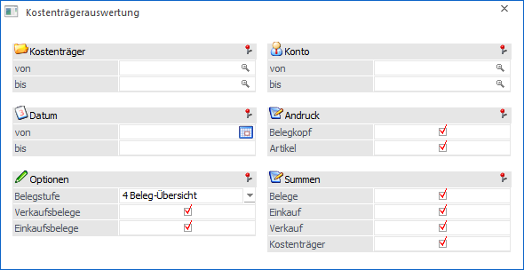
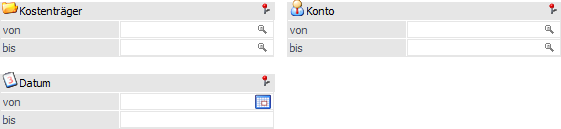
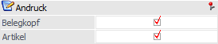
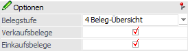
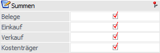

Die Kostenträgerauswertung dient zur Kontrolle einzelner Kostenträger und wird über den Menüpunkt…
1 WinLine FAKT
1 Auswertungen
1 Beleganalyse
1 Kostenträgerauswertung
… aufgerufen. Pro Kostenträger wird optional die Summe der Ein- und Verkäufe und der Rohertrag angezeigt, sowie der daraus resultierende Gewinn/Verlust. Die Kostenträgerauswertung greift nur auf bereits gedruckte Belege zu.
Achtung
Die Kostenträger müssen in der WinLine KORE als Stammdatensatz angelegt sein, um ausgewertet werden zu können.

Für die Ausgabe stehen folgende Selektions- und Einstellungsmöglichkeiten zur Verfügung:
Selektion

Ø Kostenträger von / bis
An dieser Stelle kann die Einschränkung auf die Kostenträger erfolgen, welche ausgewertet werden sollen. Durch Drücken der F9-Taste kann nach allen in der WinLine KORE angelegten Kostenträgern gesucht werden.
Ø Konto von / bis
Hier kann die Einschränkung der Personenkonten (Kunden/Lieferanten) erfolgen, welche ausgewertet werden sollen.
Ø Datum von / bis
Mit Hilfe dieser Selektion kann eine datumsmäßige Einschränkung der Belege erfolgen, die ausgewertet werden sollen.
Andruck

Ø Belegkopf
Ist diese Option aktiv, so werden die Belegkopfinformationen (Kunde, Datum, Laufnummer, Druckstatus) angedruckt.
Ø Artikel
Ist diese Checkbox aktiv, dann werden die einzelnen Artikelzeilen des Beleges angedruckt. Ist die Checkbox nicht aktiv, werden nur die Belegsummen (wenn die entsprechende Option gesetzt ist) angedruckt.
Optionen

Ø Belegstufe
An dieser Stelle kann entschieden werden, welche Belegstufen in der Auswertung berücksichtigt werden sollen.
ü 0 - Angebote
Es werden nur
gedruckte Angebote bzw. Anfragen ausgewertet.
ü 1 - Aufträge
Es werden nur
gedruckte Aufträge bzw. Bestellungen ausgewertet.
ü 2 - Lieferscheine
Es werden nur
gedruckte Lieferscheine bzw. Liefereingänge ausgewertet.
ü 3 - Fakturen
Es werden nur
gedruckte Fakturen bzw. Eingangsrechnungen ausgewertet.
ü 4 - Belege-Übersicht
Es werden
alle gedruckten Belege ausgewertet.
Ø Verkaufsbelege
Ist diese Checkbox aktiv, so werden die Verkaufsbelege ausgewertet. Ist sie inaktiv, dann werden die Verkaufsbelege nicht miteinbezogen.
Ø Einkaufsbelege
Ist diese Option aktiv, dann werden die Einkaufsbelege ausgewertet. Ist sie inaktiv, so werden die Einkaufsbelege nicht miteinbezogen.
Summen

Ø Belege
Ist diese Checkbox aktiv, dann wird pro ausgewerteten Beleg eine Summe angedruckt.
Ø Einkauf
Ist diese Checkbox aktiv, dann wird eine Summe aller Zeilen, welche den Einkauf betreffen, angedruckt.
Ø Verkauf
Ist diese Checkbox aktiv, dann wird eine Summe aller Zeilen, welche den Verkauf betreffen, angedruckt.
Ø Kostenträger
Ist diese Checkbox aktiv, dann wird eine Summe pro angeführten Kostenträger erstellt.
Buttons

Ø Ausgabe Bildschirm
Mit Hilfe des Buttons "Ausgabe Bildschirm" oder der Taste F5 wird die Auswertung am Bildschirm ausgegeben.
Ø Ausgabe Drucker
Durch Anwahl des Buttons "Ausgabe Drucker" wird die Auswertung am Drucker ausgegeben.
Ø Ende
Durch Anwahl des Buttons "Ende" bzw. der Taste ESC wird die Auswertung geschlossen.
Ø Voreinstellung speichern
Durch Anwahl dieses Buttons erfolgt eine benutzerspezifische Speicherung aller im Fenster getätigten Einstellungen. Diese sogenannten "Voreinstellungen" können jederzeit wieder abgerufen werden und ermöglichen dadurch ein schnelleres und zielorientierteres Arbeiten (nähere Informationen entnehmen Sie bitte dem Kapitel "Die Voreinstellungen").
Ø Filter bearbeiten
Durch Anklicken des Buttons "Filter bearbeiten" kann die Auswertung nach frei definierbaren Kriterien eingeschränkt werden.